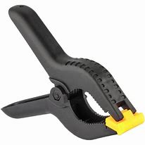
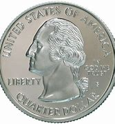
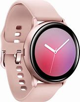
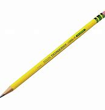
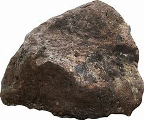
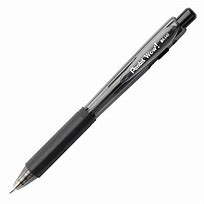

1.
Test Image-
Output on GOOGLE LENS - Plastic Spring Clamps
Output on MobileNet - Clamps
Result
Google Lens is more accurate
2.
Test Image-
Output on GOOGLE LENS - Quarter
Output on MobileNet - Quarter
Result
Draw
3.
Test Image-
Output on GOOGLE LENS - Samsung Galaxy Watch
Output on MobileNet - Watch
Result
Google Lens is more accurate
4.
Test Image-

Output on GOOGLE LENS - Pink marker
Output on MobileNet - Marker
Result
Google Lens is more accurate
5.
Test Image-
Output on GOOGLE LENS - Dixon Ticonderoga Pencil
Output on MobileNet - Pencil
Result
Google Lens is more accurate
6.
Test Image-
Output on GOOGLE LENS - Rock
Output on MobileNet - Rock
Result
Draw
7.
Test Image-
Output on GOOGLE LENS - Black Pen
Output on MobileNet - Pen
Result
Google Lens is more accurate
8.
Test Image-

Output on GOOGLE LENS - Promarx Black Dry Erase Marker
Output on MobileNet - Dry Erase Marker
Result
Google Lens is more accurate
9.
Test Image-

Output on GOOGLE LENS - Wings of Fire Legends: Dragonslayer by Tui T. Sutherland
Output on MobileNet - Book
Result
Google Lens is more accurate
10.
Test Image-

Output on GOOGLE LENS - Creativity for Kids Non-toxic Glue Stick
Output on MobileNet - Glue Sticks